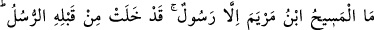
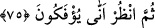
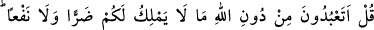
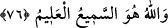

bütün günahlarını bağışlar, onlara lütfundan ikram ederdi.
75. Meryem oğlu Mesîh ancak bir rasûldür. Ondan önce de rasûller gelip
geçmiştir. Anası da dosdoğru bir kadındır. Her ikisi de yemek yerlerdi. Bak, onlara
delilleri nasıl açıklıyoruz, sonra bak nasıl yüz çeviriyorlar?
“Meryem oğlu Mesîh, ancak bir rasûldür.” Nitekim “ondan önce de rasûller gelip
geçmiştir.” O da kendinden önceki peygamberler gibi ancak peygamberlikle
görevlendirilmiş, bunun ötesine geçmemiştir. Diğer peygamberlere bazı mucizeler
verildiği gibi ona da bazı mucizeler verilmiştir. Meselâ onun eliyle ölüler diriltildiği
gibi Hz. Mûsâ’nın eliyle asâ canlandırılmış ve yürüyen bir ejderhâ hâline getirilmiştir
ki bu diğerinden daha çok hayrete şâyandır. Yine Allah onu babasız yarattığı gibi Hz.
Âdem (a.s.)’ı hem anasız hem de babasız yaratmıştır ki bu ondan daha tuhaftır. Bütün
bunlar Azîz ve Celîl olan Allah tarafındandır. Mûsa ve Îsâ (a.s.) O’nun fiil ve işlerinin
birer aynasıdırlar.
Îsâ (a.s.)’ın “Anası da dosdoğru bir kadındır”. Anası da ancak diğer doğruluğa
(sıdk) sarılan kadınlardan bir kadındı. Onların doğruluğundan (sıdk) maksat,
yaratılanlarla muamelelerinde doğru sözlülük, Yaratan ile muamelelerinde ise fiil ve
hallerinde doğru olmaktır. Onlardan kulluk ve tâatin reddini gerektirecek bir şey sâdır
olmaz.
“Her ikisi de yemek yerlerdi.” Diğer canlılar gibi buna ihtiyaç duyarlardı. Ancak
yemek yiyerek hayatını devam ettirebilen birisi nasıl ilah olabilir?
“Bak, onlara delilleri nasıl açıklıyoruz.” Onların sözlerinin asılsız olduğunu
haykıran neredeyse sağır dağların bile duyacağı parlak delillerimizi nasıl
açıkladığımıza bir bak, “sonra” da onlara bir “bak nasıl” Hak’tan “yüz
çeviriyorlar?” Bak nasıl onlara kulak verip düşünmekten yüz çeviriyorlar.
Yani “Bizim delilleri açıklamamız kendi alanında görülmemiş bir şeydir. Kabûlünü
mecbur kılacak derecede güçlü olmasına rağmen onların bu delillerden yüz çevirmesi
daha da görülmemiş bir durumdur.” Sonra şaşılacak bu iki durum arasındaki farkı ortaya
koymak için Hz. Peygamber (s.a.)’e şöyle demesi emredilmektedir: